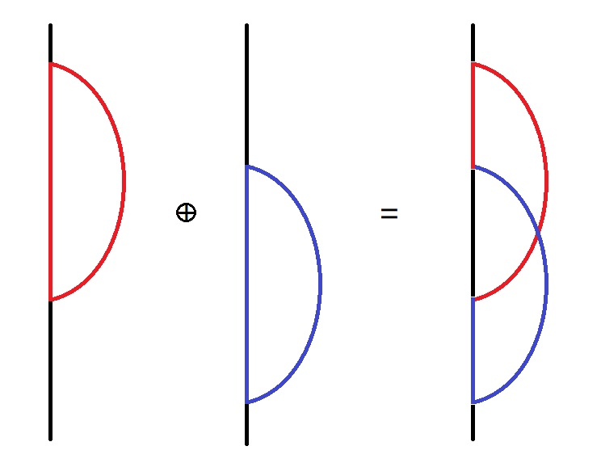
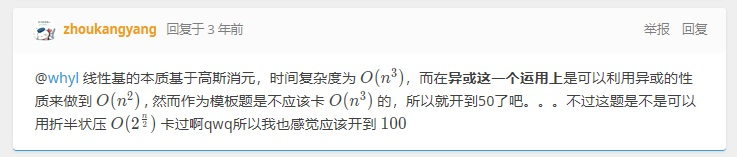
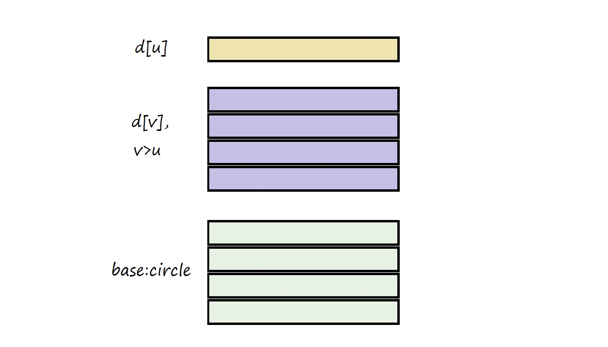

【少图预警！】【需要结合其他文章食用！】
？声明？
这里不对线性代数相关概念和异或线性基做最基本的概述。
上网搜大概可以搜到三篇高质的讲解线性基的博客：
线性基小记 - command_block 的博客 - 洛谷博客 (luogu.com.cn)
线性基学习笔记 - 拜傅里叶教总部 - 洛谷博客 (luogu.com.cn)
下面两篇适合入门。上面那个没点线性代数基础感觉看不太懂。
最下面这一篇介绍的线性基构建方法比较麻烦。
它保证了每一个存在于线性基的位置 $i$，仅有 $a_i$ 的第 $i$ 位为 1。
但这个性质完全可以在构建完线性基后，扫一遍来完成。将在模板习题给出。
-
文章中习题包括但不限于 11251 号题单。
与其说一篇关于线性基的描述，不如算是对许多博客未加证明的结论的补充，或是隐藏的结论的点明。
速成顺序建议：【模板】【前缀】【实数】【CF1163E】。
-
线性基的性质，除了常说的，基最小、基线性无关、基的张成等于原集合的张成、原集合元素的唯一表示以外，还有很多，我们将在例题逐一分析。
读者注意留意题目中各种映射关系，有助于理解。
为防不知道有没有的读者和我用的循环压缩不一致，下面的代码默认有这两行 #define：
1 |
全文 w 定义为 $\log V$。
模板线性基：P3812 【模板】线性基
这里补充一个构造线性基时需要用到的结论，或有助理解：
- 将基中的任意一个元素异或上基中的另外一个元素，基仍是基。
证明考虑，设是 $x$ 异或上了 $y$ 变成 $x’=x\oplus y$，把原张成的每个含 $x$ 的元素，替换成 $x’\oplus y$ 即可。
根据「基的张成等于原集合的张成」，我们可以对输入的全部数求基。
那么问题变成了，我们在基里面选若干元素使异或和最大。
到这里，可以使用前两篇博客中的构造方法，写出这样的代码：
1 | void insert(ll x) { |
但是这样丝毫不能体现我们对线性基的高超技艺。
我们可以使用第三篇博客的构造方法，这样构造出的基，如果第 $i$ 位存在，那么第 $i$ 列仅这一个为 $1$。（可以去 Menci 博客里好好看看，这里不详细讲）
也就意味着一个非零的行，我们选他，一定更优。
那么全部异或起来就对了。
事实上，Menci 博客里面的构造方式有些繁琐。我们可以按照前两篇博客的构造方式先构造一组线性基。
因为线性基里的数随便异或不会改变任何事情。我们可以不断异或，使得这组线性基具有 Menci 博客中提到的性质。如下：
1 | void insert(ll x) { |
第二种方法，我们的 prepare() 操作就是 command_block 博客里提到的：“将三角基进一步消成对角基”。（虽然我也不知道这俩是啥。）
在执行完 prepare() 以后，我们的基就有 Menci 博客里介绍的全部性质了。
模板题到这里就结束了。时间复杂度，三角基是 $O(n\log V)$。消成对角基要多一个 $\log V$。
P3857 [TJOI2008] 彩灯
即，计算给定集合的张成与 $\{0\}$ 的并的大小。
直接对原集合求张成大小是不会的。所以我们先求基。
根据「原集合元素的唯一表示」以及「基线性无关」，我们知道基的每个元素选，或不选，组合成的数于原数组都是不重不漏的。
那么一共能组合出 $2^k$ 次方个数。$k$ 是基的大小。
至于零，输出时加一就好了。
时间 $O(mn)$。
P4301 [CQOI2013] 新Nim游戏
首先我们要熟知经典 Nim 游戏的结论：当一个局面全部石子个数的异或和为零，必败。否则必胜。
在这道题中，第一回合我们需要拿走若干堆石子，使得无论对手取哪几堆石子，都会送我们一个必胜局面。
也就是说，使得对手不能将局面变为，全部石子个数异或为零。
也就是说，我们拿完第一次，剩下的石子不存在一个非空的子集（因为对手可以不拿，所以不是真子集），使得异或和为零。
也就是说，剩下的石子线性无关。
注意基的定义，基没有异或和为零的子集。
且，「基，是原集合全部线性无关子集中，集合大小最大的」。
因为我们要最小化第一回合我们取的石子数量，所以剩下的石子要大。那么我们留一个基就好了。
为了最大化基，我们降序排序，顺序枚举，能选就选。
如果向 $a_{1\to i-1}$ 形成的基中加入 $a_i$，变得线性相关，说明 $a_i$ 可以被 $a_{1\to i-1}$ 一些表示出来。
此时我们要么保留原本的基，要么从原本的基删掉一个元素，加入 $a_i$。
注意到，这两种基都是由 $a_{1\to i-1}$ 形成的基，张成一样。即完全等价。
那么，对于两种等价的基，我们保留原本的基，答案不会更劣。
所以这是对的。
这种，「选取线性无关子集，最大化求和」或是「留下线性无关子集，最小化选取求和」的问题，以后还会遇到很多次，都可以用这种方式解决。
时间 $O(k\log V)$。
P4570 [BJWC2011] 元素
做过【P4301】这道题就算裸了。请读者自行完成。
P3292 [SCOI2016] 幸运数字
若我们得到两点间的线性基，事情就很典了。
注意线性基大小是 $\log V$ 级别的。那么我们可以通过把一个线性基里的数加入另一个完成时间为 $O(\log^2V)$ 的合并。
那我们有两种方法：
- 获得 $(x,lca)$ 和 $(y,lca)$ 的线性基，合并。
- 树剖+线段树或者倍增维护线性基。
询问是不确定的，所以第一种方法不行。（可以使用前缀线性基 $O(q\log^2V)$，但这里先不提前介绍）
从线段树询问区间线性基，会拆成 $\log n$ 个区间，合并这些要 $\log^2V\times\log n$。
树剖需要 $\log n$ 次线段树询问。所以时间是 $O(q\log^2V\log^2n)$ 的。
注意线性基是可重复贡献的。可以用 ST 表维护某个点向上 $2^i$ 的线性基。$O(n\log^2V\log n+q\log ^2V)$。
$n$ 比 $q$ 小一些，第二个做法较优。
Code for this.（这里是树剖+线段树，ST 表的代码可以去题解区找）
P4151 [WC2011] 最大XOR和路径
这次变成图了。没环的话跟上一题一样。
如果从一个点开始，走到一个环，绕一圈，原路回来，此时获得的贡献仅是环的。意思是每个环都可以随便选。
记由「若干返祖边和返祖边跨过的边形成的环」为特殊环。
建出 dfs 树。那么每个环都可以由若干特殊环通过异或组成。如下图，再归纳即可。

那么我们此时要选一条从 $1$ 到 $n$ 的最优的路径，最优是指它选一些环异或起来最大。
当我们知道哪一条最优以后，问题就变成了已知的路径异或和（第一步），要任选一些 $a_i$ 异或异或起来最大（第二步）。$a_i$ 就是各个环的异或和。
既然每个环都在特殊环的张成里，我们对特殊环建线性基。那问题就是第一步。
总不能枚举全部路径。观察两条从 $1$ 到 $n$ 的路径。它们构成了一个环。
那么，如果我选了一条 $1\to n$ 的路径 $A$，然而 $1\to n$ 的最优路径是一条不等于 $A$ 的路径 $B$。
那么在我选一些环使得异或和最大的时候，我会选出 $1\to n\to 1$ 这一个环，且这个环由 $A,B$ 构成。
此时我的第一部分异或就变成了 $B$。
所以第二步会令第一步最优。第一步随便找就好了。
时间 $O(n+(m-n)\log V)$。
前缀线性基：CF1100F Ivan and Burgers
提醒：a[i] 指基元素，$a_i$ 指序列。
这，就是上上题提到的，前缀线性基！
我们对于每个 $i$ 维护一个 $a_{1\to i}$ 形成的线性基。
这个基，由尽可能靠后的数组成。
什么意思？
我们要理解两件事：
- 基不唯一，且可以是原集合的子集。
（如果你是线代大师会觉得这很显然）
举个例子，$a=\{1,2,3\}$，一个合法的基是 $\{2,3\}$。
$$
\begin{aligned}
10\\
11\\
\end{aligned}
$$
但是这种基并不会被我们构造出来，因为他们的最高位都是 $2^1$ 位。我们构造的应是：
$$
\begin{aligned}
01\\
10\\
\end{aligned}
$$
这两种基本质是相同的。我们可以对第一个基进行内部异或运算。它一定可以变成第二个。（全部基都可以这样，证明考虑【模板】的证明）
- 常见的线性基，由尽可能靠前的元素组成。
因为我们是贪心构造：如果能加就加了。
- 综上，「构造线性基」得到的结果（后面两句不是流程！只是结果一样！），是选最靠前的基，再进行基内部异或使得不存在两个最高位相同的元素。
内部异或不会异或出零，因为我们选了基。
这两条性质很重要。影响到后面题目的完成。
那么，选尽可能靠后的数构成线性基，即从后往前做 insert()。
那对于每个位置 $i$ 处理出 $a_{1\to i}$ 尽可能靠后的元素形成的线性基，下意识记录基元素 a[i] 在原数组下标，记 p[i]。
询问时不要算 p[i]<l 的 a[i] 就好了。
我们发现它 TLE 了（而非 WA ）。所以分析是对的。
考虑利用好 $i-1$ 的信息，令 $i$ 的线性基从 $i-1$ 复制过来。接着想办法把 $a_i$ 正确加入。
使 $a_i$ 必须加入。
- 若加入 $a_i$ 基仍线性无关，则代码会自己顺序执行并插入 $a_i$。
- 否则会冲突。
有一种很自然的解决方式，如代码：
1 | void insert(int x,int id) { |
我们遍历过的 a[i] 已经是尽可能靠后，并且当前 a[i] 尽可能靠后，并且最终基的张成不变，归纳可证新基由尽可能靠后的元素形成。（信息量很大）
请你联系引用框段，好好思考。
你会明白此时的基，
a[i]，是原序列第p[i]位经基内异或得到的结果。虽然对这题无意义。
那么我们成功得到了第 $i$ 位的基。
时间 $O(n\log V+q\log V)$。
CF845G Shortest Path Problem?
与 WC2011 一样。请读者自己思考。
实数线性基：P3265 [JLOI2015] 装备购买
事情变得稍稍有点意思了。
这次，线性组合不再是常见的 Xor 运算，而是线代中的「线性组合」，也即，向量的缩放和加法。
将 $n$ 件武器视作 $n$ 个 $m$ 维向量。
如果我们能维护这样子的「线性组合」意义下的「线性基」，这道题就变得很经典了——排序。
照葫芦画瓢，我们重新思考异或线性基中各个部分的意义。
- 基、张成，很显然。
- 内部异或，张成不变。
内部异或→内部线性组合→矩阵的行初等变换。
即，矩阵做行初等变换，张成不变。证明与先前类似。
insert()时，$i$ 从w向0枚举，空就赋值，非空就异或。空，指没有最高位为 $2^i$ 的基元素。
异或，指消掉待加入数的 $2^i$ 位。
变为：从最高维开始，向最低维枚举，若基中没有最高维是第 $i$ 维的变量，赋值；否则将待加入的向量第 $i$ 维消为零。
P.S. 为了和异或线性基一致，定义属性从 $1$ 到 $m$ 为从高到低。
那就会做了。
可以联系这篇博客的图。
为了实现常数，我们不真的像原本那样建立新数组存基，转而记录最高维是第 $i$ 维的变量在原数组的下标。并在原数组进行消元。
时间 $O(nm^2)$。
同时我们发现，这才是线性基真正的复杂度。

平时的异或线性基为什么少了个 $m$ 呢？因为消元运算被异或运算优化成 $O(1)$ 的了。
@Tangninghaha 做过一道可删线性基《八纵八横》。这里维度很高，可以用 bitset 优化。$\frac{m^2}{\omega}$。
你也可以理解为平时 $V$ 在 long long 以内的是除了个 $\omega$。
这道题精度开 1e-5 即可。不然会 WA。
P5556 圣剑护符
询问两点间点权是否线性相关。
基元素最高位不得相同。因此，基的元素不超过 $\log V$ （ w ）个。
当原集合大小大于 w 时，必有元素无法插入，即线性相关。
所以选择性暴力回答询问或输出 YES。
修改我选择了利用 dfn 序差分。或许还有别的做法。
这是 $O(n\log V+q\log^2 V)$。
CF724G Xor-matic Number of the Graph
像 WC2011 那题一样构造特殊环的线性基 $circle$。先表示出来答案。
就是对于全部的 $u,v$，对 $\sum_{x\in\text{span}(circle)} dis(u,v)\oplus x$ 求和。
任意建生成树，设 $d_x$ 为 $x$ 到根的异或和。$dis(u,v)$ 就变成了 $d_u\oplus d_v$。

枚举 $u$，此时我们有三组数，第一组是 $d_u$ 一个，第二组是 $v$ 大于 $u$ 的 $d_v$（为了不算重），第三组是特殊环的基。
我们要做的就是每组任选一个，Xor 起来，求和。
这里我们可以按位贡献。统计下面两组每个位置 0/1 数量。
用简单的组合数学做。就不细讲了。
注意图不一定联通。
时间 $O(n\log V)$。
Code for this.（我当时写的时候每个 $(u,v)$ 算了两次，最后除以 $2$，懒得改了。）
CF895C Square Subsets
注意 $70$ 以内质数共有 $19$ 个。
某个数是完全平方数，当且仅当，它每个素因子的次数为偶数。
我们可以把每个 $a_i$ 变成一个长 $19$ 的二进制串，代表 $a_i$ 中每个素因子次数的奇偶性。
非空子集乘积为完全平方数，当且仅当，这些二进制串 Xor 为零。
解法一
那么我们状压。$f_{i,j}$ 前 $i$ 个二进制串，Xor 等于 $j$ 的非空子集数量。转移很显然。
怎么优化？注意 $1\leq a_i\leq 70$，所以本质不同的二进制串至多 $70$ 个。
可以把若干个相同的压起来，dp 时乘一乘即可。
时间 $O(2^{19}V)$。（不要跟我争是 $O(V)$。）
解法二
线性基！「非空子集异或和为零」是「非空子集线性相关」充要条件。
求有多少非空子集线性相关。延续前面几题的思想，一个基对应着若干个原序列的元素。（你忘了的话请看「前缀线性基」的引用段落）
剩下的元素的任意非空子集都有一个 Xor 值，且我们可以唯一选取选基的一个子集（可为空）使得它的异或和异或上 Xor 等于零。
哦！
我们每选取剩下元素的一种非空子集，对应着一种不同的选取方案（基里唯一选取）。
且，每一种合法选取，必对应上面这里的一种选取。
他们是双射！
答案就是 $2^{n-l}-1$！（$l$ 是基大小）
减一你猜。
时间 $O(19n)$。
CF1163E Magical Permutation
我们可以先枚举 $x$，判断是否存在相邻两个数的 Xor 属于 $S$ 的、$0\to 2^x-1$ 的排列。简记 $n=2^x-1$。
设排列的第一个数为 $\alpha$，第二个为 $\beta$。设排列相邻两两异或值为 $S_{i_1\to i_{n-1}}$。
则 $\alpha\oplus\beta=S_{i_1}$，即 $\beta=\alpha\oplus S_{i_1}$。
那可以表示出整个排列：
$$
\begin{aligned}
&\alpha\\
&\alpha\oplus s_{i_1}\\
&\alpha\oplus s_{i_1}\oplus s_{i_2}\\
&……
\end{aligned}
$$
$\alpha$ 不知道哎！没关系！把排列每个数异或上 $\alpha$，得到的还是一个排列。
$$
\begin{aligned}
&0\\
&s_{i_1}\\
&s_{i_1}\oplus s_{i_2}\\
&……
\end{aligned}
$$
现在要解决：不断从 $S$ 里选数，和上一个数异或，得出新一个数。重复这个操作，要构造排列。
我们设想一下，如果新选的数没被选过，那构造出的一定是新数。
否则，新选的数会和原先选过的异或相消，相当于删了一个数。
所以，这其实是不断在集合中加数、减数的一个过程。
我们用到的是全部最高位不超过 $2^x$ 的 $S$。这些元素的张成是 $[0,2^x-1]$，是有解的充要条件。
假设现在有解。
我们对这些元素建线性基，并提取出*在基中的 $S$ *，记为 $in$。
则 $in$ 大小等于 $x$。我们要构造一个二进制数的排列，相邻两个不同位置恰为 $1$，每个数都代表选择 $in$ 里的哪些。
输出时可以用二进制数算出答案。
构造二进制数排列方法打个暴力找规律就会了。也可以去看别的题解。
$in$ 这里讲的有些简陋。但如果你对前缀线性基里的引用段落完全理解，这一部分会很显然！
时间 $O(\log^2 V\log n+V\log V)$。
我们发现，许多题都是从 $in$ 这种思想开始思考的，通常会有双射，这也是线性基强大之处之一。
P4869 albus就是要第一个出场
求 $a$ 全部非空子集异或和组成的可重集里 $q$ 的排名。
排名，即小于它的个数+1。
想象这样的画面，$n$ 个点排成一行，其中有 $l$ 个是黑的，剩下都是白色，这 $l$ 个是 $a$ 的一组基。
这些黑点有多少子集的异或和小于 $q$ 是很好算的。
我们思考是否关于每一种黑点的、异或和小于 $q$ 的选择方案，都有等数量的、整个序列的选择方案与其对应（可以理解为一对多的映射“黑 $\to$ 黑白”）。
如果有的话，我们直接用黑点的方案乘上这个等数量即可。
在选择一组异或和小于 $q$ 的黑点方案前提下（设异或和是 $y$），随便画一种白点的选择方案（设 $x$）。
此时我们不能保证整个序列选择的异或和 $x\oplus y$ 小于 $q$。
但我们若能令此时序列异或和再异或上 $x$，则 $y$ 是小于 $q$ 的。
注意 $y$ 可以被黑点唯一表示。也就是再“选”一些黑点！
但如果黑点贡献到 $y$ 了呢？我们不选它。因为删它和选两次它效果是一样的。
因此，每种黑点的、异或和小于 $q$ 的选择方案，我们可以通过调整黑点的选择，使得任意一组白点的选择方案（共 $2^{n-l}$ 组）合法。
直接乘起来？
若两种黑点的选择方案所拓展出的选择方案有重复呢？
这显然不存在，因为对于一种黑点方案拓展出的 $2^{n-l}$ 种序列选择方案，异或和相等，且等于黑点方案异或和。
又因为黑点方案不相等，故不重复。
（至于求 $k$ 大、求排名，可以消成对角基后当作一种特殊进制做。）
P4839 P 哥的桶
这么靠后的还有板题？！
你自己想怎么做吧。时间 $O(q\log n\log^2V)$ 就过了。
P5607 [Ynoi2013] 无力回天 NOI2017
这题很妙啊。
构一个数组 $b_i=a_i\oplus a_{i-1}$。
则 $a_i=b_1\oplus b_2\oplus …\oplus b_i—-[1]$。
而且，$a_{l+1}=a_l\oplus b_{l+1},a_{l+2}=a_l\oplus b_{l+1}\oplus b_{l+2}$。以此类推。
所以 $a_{l\to r}$ 可以被 $a_l,b_{l+1\to r}$ 异或得出。
与「基内部异或，张成不变」类似，「集合内部异或，张成不变」。所以这两个东西张成一致。
所以可以建立 $b$ 的基，并用式 $[1]$ 得到 $a_l$，回答询问。
同时我们惊讶地发现，对 $a$ 的区间操作，由于异或相消的性质，在 $b$ 上是单点操作。
那么就做完了。时间 $O(n\log^2 V+q\log n\log^2 V)$。
ix35_ 提到了一种不用前缀的做法。搞明白再回来补。
CF959F Mahmoud and Ehab and yet another xor task
对前 $l$ 个建立线性基。
与 P4869 一样进行黑白染色。（这题感觉是 P4869 弱化版）
当 $x$ 在前 $l$ 个数的张成里，那么对于白点的每一种方案（设异或和为 $y$）（可知 $x\oplus y$ 在张成里），
根据「原集合元素的唯一表示」，可以唯一选黑点使得黑点异或和为 $x\oplus y$。
答案和白点方案双射。那就做完了。
$O(n\log V+q(\log V+\log n))$。不同写法会有略微差别。